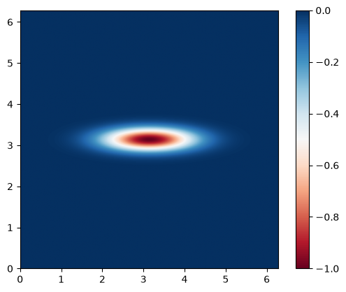
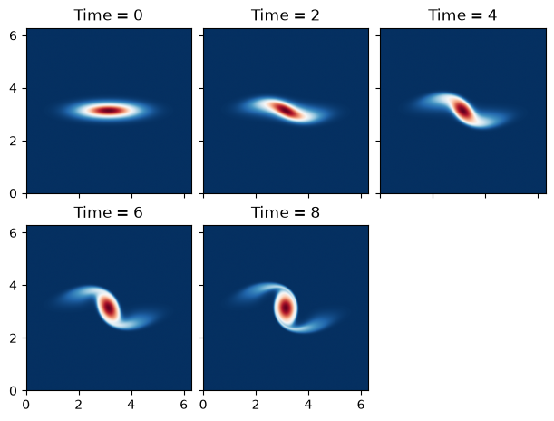

Surface Quasi-Geostrophic (SQG) Vortex
This example is reworked from the original PyQG SQG example. We reproduce a plot from the paper “Surface quasi-geostrophic dynamics”.
import operator
import functools
import math
import matplotlib.pyplot as plt
import jax
import jax.numpy as jnp
import powerpax
import pyqg_jax
Construct the Model
We construct the SQGModel object with
adjusted parameters, and wrap it in a stepper for later simulation.
DT = 0.005
T_MAX = 8
SNAP_INTERVAL = 2
stepped_model = pyqg_jax.steppers.SteppedModel(
pyqg_jax.sqg_model.SQGModel(
L=2 * jnp.pi,
nx=512,
beta=0,
Nb=1,
H=1,
f_0=1,
),
pyqg_jax.steppers.AB3Stepper(dt=DT),
)
stepped_model
SteppedModel(
model=SQGModel(
nx=512,
ny=512,
L=6.283185307179586,
W=6.283185307179586,
rek=5.787e-07,
filterfac=23.6,
f=None,
g=9.81,
beta=0,
Nb=1,
f_0=1,
H=1,
U=0.0,
precision=<Precision.SINGLE: 1>,
),
stepper=AB3Stepper(dt=0.005),
)
Configure Initial Condition
The initial condition in this example is an elliptical vortex
The amplitude is \(\alpha = 1\) which sets the strength and speed of the vortex. The aspect ratio in this example is 4 and gives rise to an instability.
We calculate the values for this initial condition
x = stepped_model.model.x - jnp.pi
y = stepped_model.model.y - jnp.pi
vortex = -jnp.exp(-(x**2 + (4 * y) ** 2)/( stepped_model.model.L / 6) ** 2)
We can examine the initial state
plt.imshow(
vortex,
cmap="RdBu",
vmin=-1,
vmax=0,
extent=(0, stepped_model.model.W, 0, stepped_model.model.L),
)
plt.colorbar()
<matplotlib.colorbar.Colorbar at 0x7f61f80c4190>

and finally package it into a stepped state object
init_state = stepped_model.create_initial_state(jax.random.key(0)).update(
state=stepped_model.model.create_initial_state(jax.random.key(0)).update(
q=jnp.expand_dims(vortex, 0)
),
)
init_state
AB3State(
t=f32[],
tc=u32[],
state=PseudoSpectralState(qh=c64[1,512,257]),
)
Run the Model
We roll out the initial state up to T_MAX taking snapshots according
to SNAP_INTERVAL.
@functools.partial(jax.jit, static_argnames=["num_steps", "subsample"])
def roll_out_state(state, num_steps, subsample):
def loop_fn(carry, _x):
current_state = carry
next_state = stepped_model.step_model(current_state)
return next_state, current_state
_final_carry, traj_steps = powerpax.sliced_scan(
loop_fn, state, None, length=num_steps, step=subsample,
)
return traj_steps
Note the use of powerpax.sliced_scan() above to skip steps
between each snapshot. This produces a trajectory traj that we can
examine.
num_steps = math.ceil(T_MAX / DT) + 1
snap_subsample = math.ceil(SNAP_INTERVAL / DT)
traj = roll_out_state(init_state, num_steps, snap_subsample)
Plot States
We plot each of the snapshots taken from the simulation. With access
to more time (or ideally a GPU) this model can be simulated for a
longer time period by adjusting T_MAX above.
cols = 3
rows = math.ceil(traj.tc.shape[0] / 3)
fig, axs = plt.subplots(
rows,
cols,
layout="constrained",
figsize=(6, 2.25 * rows),
sharex=True,
sharey=True,
)
for step_i, ax in enumerate(axs.ravel()):
if step_i >= traj.tc.shape[0]:
fig.delaxes(ax)
continue
step = jax.tree.map(operator.itemgetter(step_i), traj)
data = step.state.q[0]
ax.imshow(
data,
vmin=-1,
vmax=0,
cmap="RdBu",
extent=(0, stepped_model.model.W, 0, stepped_model.model.L),
)
ax.set_title(f"Time = {step.t.item():.0f}")
